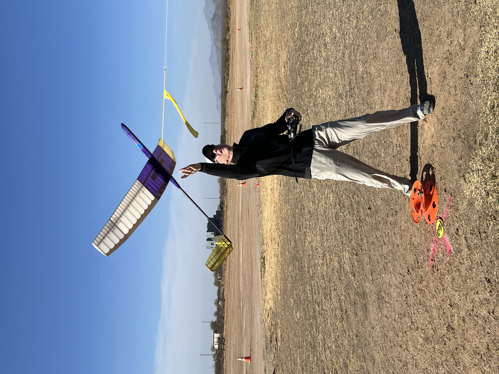
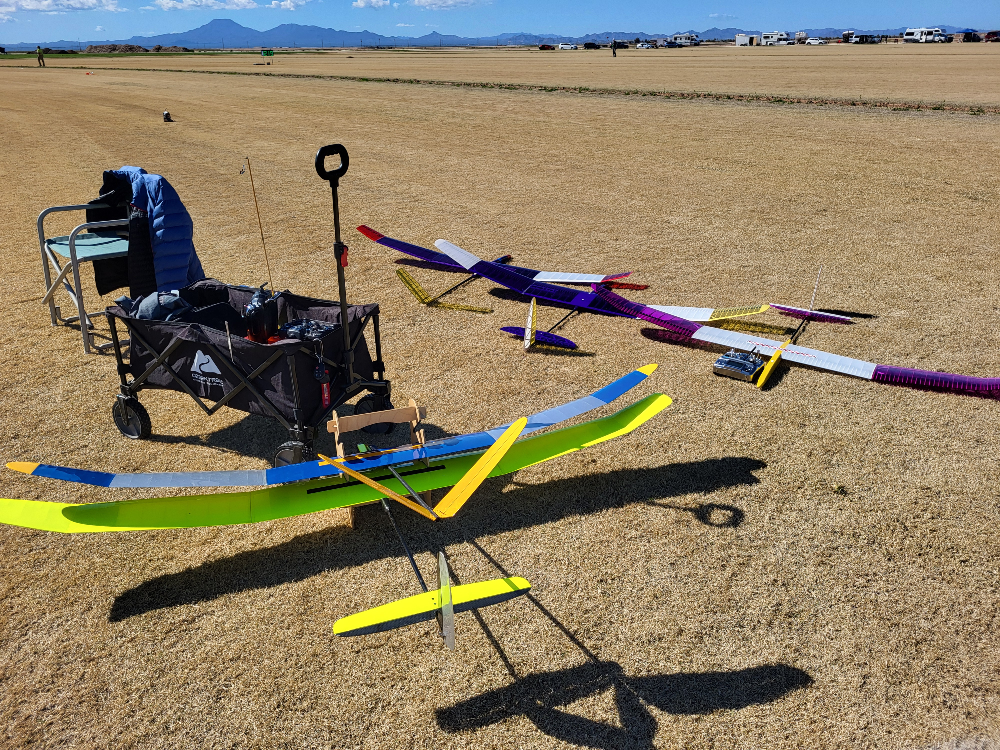

What is F3L?
FAI F3L is an international category of radio-controlled (R/C) gliders for thermal soaring. Also sometimes referred to as F3 RES (Rudder, Elevator, Spoiler), the models feature a maximum two (2) meter wingspan; are primarily of wooden construction; and are controlled only by rudder, elevator and spoiler(s). For launching, a bungee and towline is used. Due to the restrictions on construction and equipment, F3L provides a low-cost introduction into R/C competitions that is achievable for anyone of average skill. One key aspect of this class is to inspire young modellers and integrate them into the sport. It also allows kit-bashing and the creation of original designs without the tooling costs of molded carbon fiber construction.
The discipline emphasizes:
- Precision Flying: Pilots must demonstrate excellent control, thermal hunting skills, and landing accuracy
- Consistency: Success requires repeatable performance across multiple rounds
- Strategy: Deciding if you should relaunch or take the points you have earned
- Fair Competition: Standardized 2-meter wingspan and person-on-person normalized scoring
- Team work: Three or four person teams work together to help each pilot get the best flight in each heat
Competition Format
F3L contests typically follow this format:
Aircraft Specifications
- Maximum wingspan: 2 meters (2000mm)
- Primarily wooden construction
- Bungee launch (no motor power)
- Allowed controls: Rudder, Elevator, and Spoiler(s) only
Flying Format
- Multiple rounds (typically 7-10 rounds over two days)
- Normalized scoring within each heat
- 9-minute working time per round
- Bungee launch to maximize initial altitude
- Target time: 6 minutes
- Points awarded based on flight time relative to target time
- Landing bonus points for precision landings

Bungee launch - the start of every F3L flight
Scoring
Pilots accumulate points across all rounds. The pilot with the highest total points wins. Strategic flight time management and consistent landing accuracy are key to success.
.jpg)
Sticking the landing - Photo by Bob Hirsch
Official Rules
Complete F3L rules and technical specifications are maintained by the FAI and published in the F3 Soaring section:
📄 Download Official FAI F3 Soaring Rules (PDF)
Note: F3L specifications are found in Section 4.3.6 of the FAI F3 Soaring rules document.
Learn More About F3L
Explore these resources to deepen your understanding of F3L competition and get insights from experienced pilots:
Articles & Guides
- What is F3L? - Comprehensive overview by Ryan Woebkenberg on Medium
Videos & Interviews
- 2018 NATS: Getting into F3RES with Greg McGill - Interview covering the fundamentals of F3L/F3RES competition
- SWSS Phoenix AZ F3L 2023 Practice & Day 1 - Bungee challenge overview
- F3L CONTEST Eurocup / World Contest - Risotto Cup 2025 Teaser
Getting Started
Interested in competing in F3L? Here's what you need to know:
Equipment Requirements
- F3L-compliant 2-meter sailplane (see How To for kit options)
- A 2.4 GHz or 72MHz radio system with at least 3 channels (rudder, elevator, spoiler)
- Bungee launch system (typically 50-100 meters of surgical tubing or rubber)
- Timer/stopwatch for tracking flight times
- Basic tools and materials for maintenance and repairs
- Optional: Wagon to carry equipment and supplies to the flight line

A wagon makes contest day easier
Skills to Develop
- Thermal detection and centering
- Launch technique and initial altitude management
- Time management to hit target flight times
- Precision landing skills
- Reading weather conditions
First Steps
- Join your local Academy of Model Aeronautics (AMA) club and find experienced F3L pilots
- Build or purchase an F3L-compliant sailplane
- Practice thermal soaring at your local field
- Attend a contest as an observer to learn the ropes
- Register for your first competition!